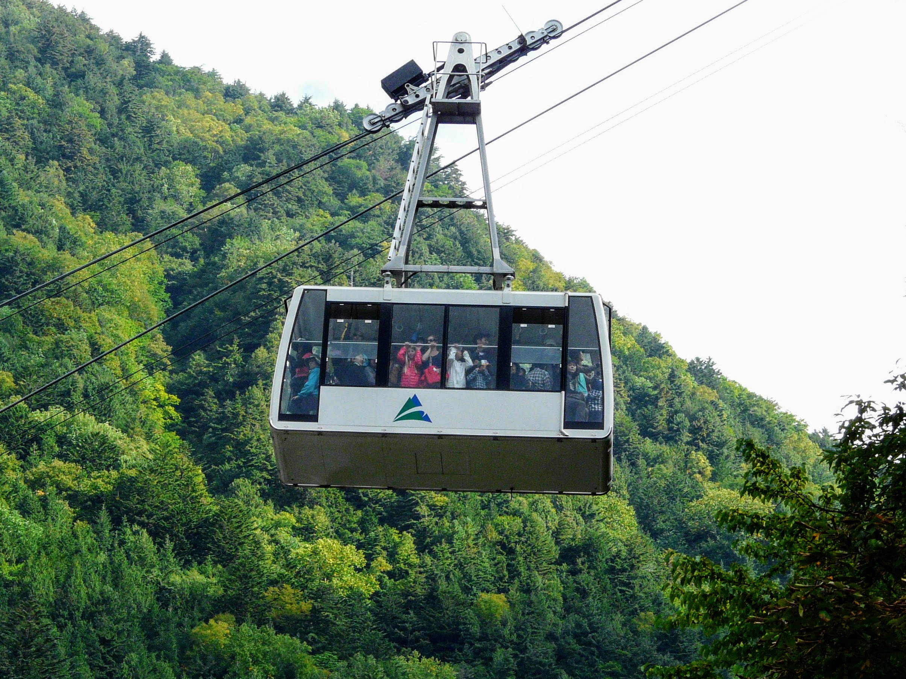

Bastões de trekking podem poupar joelho, melhorar equilíbrio e criar ritmo. Mas também podem atrapalhar em trecho estreito, rocha, corrente, escada ou área onde as mãos precisam ficar livres.
Quando ajudam
- Subidas longas, para distribuir parte do esforço entre braços e pernas.
- Descidas, para reduzir impacto e controlar ritmo.
- Travessias com lama, pedra solta ou pequenas passagens de água.
- Caminhadas longas com mochila mais pesada.
- Rotas em que equilíbrio e constância valem mais que velocidade.
Ajuste básico
Em terreno plano, o cotovelo deve ficar perto de 90 graus. Em subida forte, encurte um pouco. Em descida longa, aumente um pouco. O ajuste precisa ser simples o bastante para você mudar durante a trilha.
Quando guardar
Guarde bastões em escadas metálicas, trechos de corrente, rocha que exige apoio de mão, trilha estreita cheia de gente ou vegetação densa. Em algumas rotas japonesas, o bastão pode incomodar outros caminhantes se usado sem atenção.
Fontes consultadas
- Yakushima World Heritage Conservation Center: Required Equipment
- National Parks of Japan: Rules and Safety
Origem editorial: pauta da Elevação, publicada no Japão Relativo em 16 de agosto de 2026.